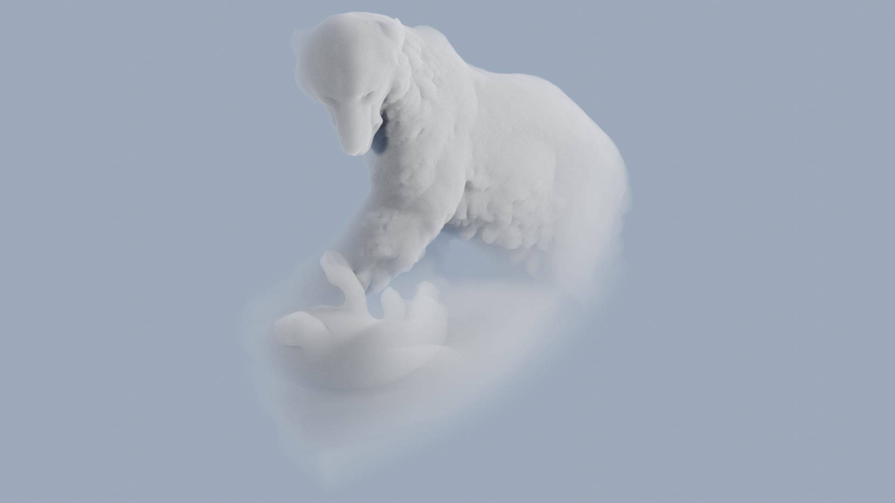

February, 2020. The video’s focus is the Pirelli Tire Building. The first section montages the flowing motion of space in Pixar movies, intended to create a sense of Utopian wonder. The second section compares the social history of the Pirelli building to the idealistic writings of its architect, Marcel Breuer. The third section displays renderings of common-place words, clad in Pixar-inspired furs. The video is about the possibility of imaginary space versus its reality.
May, 2020. Comparison between the brutalist architecture of the Lily Acheson Wallace World of Birds and the social behaviors of ones its residents, Paprika, a male red bird of paradise. Special attention to music and birdsong.
September, 2020.
May, 2020. (3:36) Regrettable usage of the word “ripe”. (3:56) I mixed these up: in the Phaedrus, Socrates makes an argument against pederasty and then an argument for pederasty. (13:15) The phrase I was looking for was “Scottish Descent”. (14:23) Referring to the arid grasslands of the Scottish Highlands. (17:05) “Joseph Beuys was a Symbolic Artist”, I mean that for Beuys certain materials have symbolic meaning not inferentially articulated. (17:50) Meant to say “mass-extinction” of bees. (21:54) The 'Weak Conclusion' sucks, I’d omit this slide. (24:30) Didn’t answer a lot of these questions well because I was nervous. I didn’t directly address Aidain’s question about historical critique. To answer, I think that there is a place for historical critique in speculative work, only if it doesn’t extensively take away the viewer's ability to form their own opinion. (31:08) I really like Jake’s comment about what the artwork can accomplish without the help of language, but I was nervous and I didn’t respond well to it. Thank you Jake! (34:00) The obligatory identity construction/masculinity question. I went a little too far when I said “I’ve tried desperately to remove myself from the work”. I disagree with this statement. I don’t believe that it’s possible or appropriate to remove ones identity from the work. I’d rather say that I prefer to focus on other aspects of my identity such as the subjects I'm passionate about.
October, 2020. A selection of 'bear clouds'. The symbol of a bear is softened into a passive creature by the transitory texture of a cloud-- something akin to the visual transformation of a North American Grizzly Bear into Winnie the Pooh. What would the paradoxical image of a cloud-bear killing its prey look like?
The background of this page surveys the architecture of Zootopia